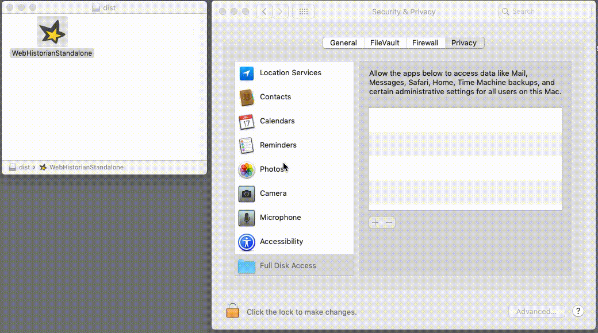

Since macOS 10.14 (Mojave), apps are automatically excluded from accessing personal data such as browsing history. To be able to use the Web Historian app, you may need to explicitly grant it permission to access your data in the privacy settings.
Please go to the Privacy tab of your Security settings and add the Web Historian app to the list under Full Disk Access, as shown in the image below.
Once you have added the app to the list, you may re-run the app by clicking on it again. If you have already added the Web Historian app to Full Disk Access but you continue to get this error message, please contact the app provider.
